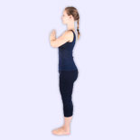
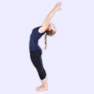
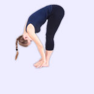
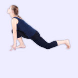
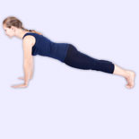
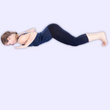
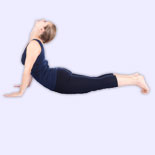
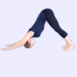

- Namaskar(Salute): Start in a standing position, facing the sun. Both your feet should touch each other, palms joined together, in prayer pose.
- Ardha Chadrasana(Half Moon Pose): With a deep inhalation, raise both arms above your head and tilt slightly backward arching your back.
- Padangusthasana(Hand to foot posture): With a deep exhalation, bend forward and touch the mat, both palms in line with your feet, forehead touching your knees.
- Surya Darshan(Sun Sight Pose): With a deep inhalation, take your right leg away from your body, in a big backward step. Both your hands should be firmly planted on your mat, your left foot between your hands, head tilted towards the ceiling.
- Purvottanasana(Inclined Plane): With a deep inhalation, take your right leg away from your body, in a big backward step. Both your hands should be firmly planted on your mat, your left foot between your hands, head tilted towards the ceiling.
- Adho Mukha Svanasana(Downward Facing Dog Pose): With a deep exhalation, shove your hips and butt up towards the ceiling, forming an upward arch. Your arms should be straight and aligned with your head.
- Sashtang Dandawat(Forehead, Chest, Knee to Floor Pose): With a deep exhalation, lower your body down till your, forehead, chest, knees, hands and feet are touching the mat, your butt tilted up. Take a normal breath in this pose.
- Bhujangasana(Cobra Pose): With a deep inhalation, slowly snake forward till your head is up, your back arched concave, as much as possible.
- Adho Mukha Svanasana(Downward Facing Dog Pose): Exhaling deeply, again push your butt and hips up towards the ceiling as in position 6, arms aligned straight with your head.
- Surya Darshan(Sun Sight Pose): Inhaling deeply, bring your right foot in towards your body, in a big forward step. Both your hands should planted firmly on your mat, right foot between your hands, head tilted towards the ceiling.
- Padangusthasana(Hand to Foot Pose): Exhaling deeply, rise up and touch the mat, keeping both your palms in line with your feet, forehead touching your knees.
- Ardha Chandrasana(Half Moon Pose): With a deep inhalation, raise both arms above your head and tilt slightly backward arching your back.
- Namaskar(Salute): Return in a standing position, facing the sun. Both your feet should touch each other, palms joined together, in prayer pose.








